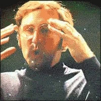

Projects.
Like Norman Parkinson, Richard Avedon, and Irving Penn, newton became one of the most influential and talented photographers shooting for Vogue. Perhaps his biggest supporter and promoter was his wife June, who established her own career as a photographer under the pseudonym April Springs.Newton's work has has been exhibited worldwide and featured in magazines and numerous mongraphs. The preservation and presentation of his work is managed by the Helmut Newton Foundation in Berlin, which was established in 2003.
| Title | Place | ||
| Helmut Newton: The New Exhibition | LEGACY Show in Berlin | Helmut Newton | |
| pretty |  | wow |